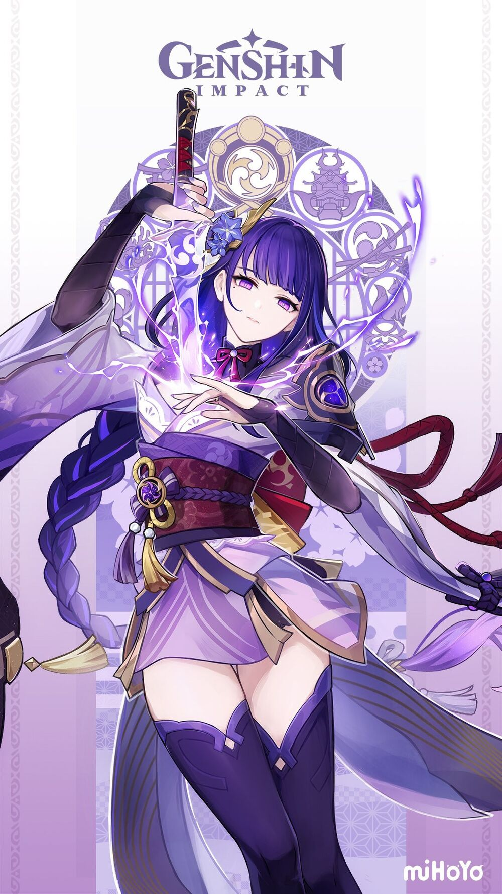
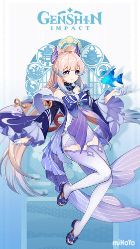
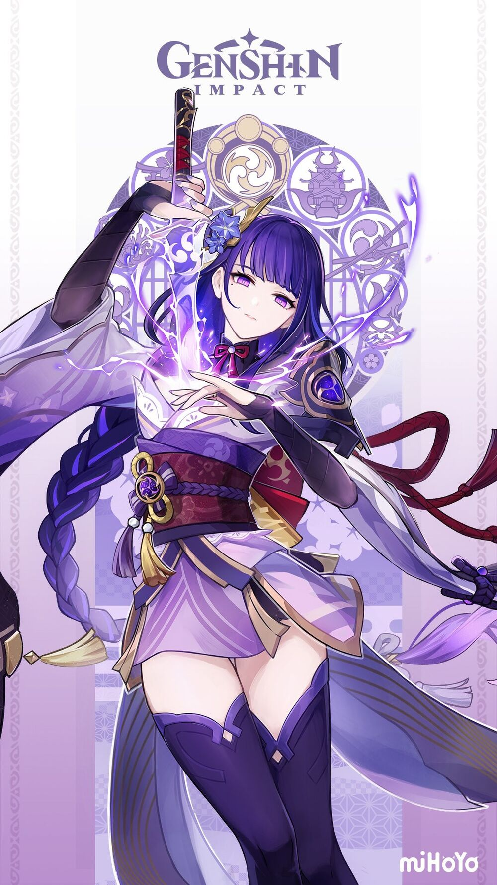
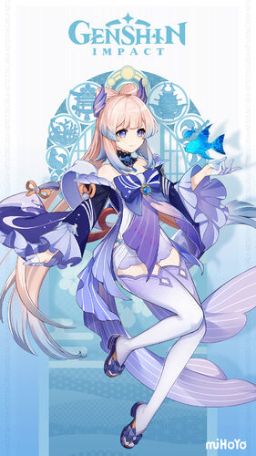
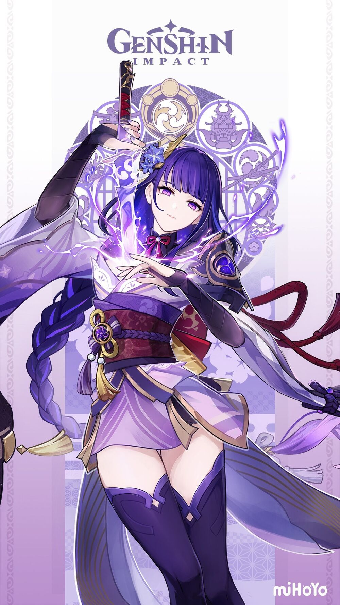
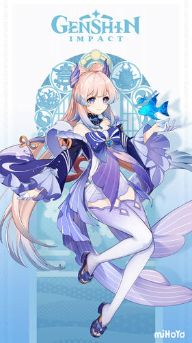

Inazuma is an archipelago nation that is under the Raiden Shogun's rule, more known as the Electro Archon, She is the God of Electro. Inazuma is located southeast from Liyue Harbor. Inazuma is culturally referenced to Japan. Before the traveller arrives, the nation is under a Sakoku Decree and the Vision Hunt Decree. Just like Japan, they locked down the country because of the Sakoku Decree. The Vision Hunt Decree declared that all Visions, which are catalysts of elemental power, are to be surrendered and put up in the statue of the Thousand-Armed, Hundred-Eyed God. Inazuma has five islands to its archipelago, which are shown below. Narukami Island is the main island of Inazuma within it is Inazuma City and other places like the Grand Narukami Shrine. Kannazuka is another island of Inazuma containing the Mikage Furnace, and the disputed territory between the Inazuma Shogunate and the Watatsumi Rebellion. Yashiori Island is covered with rain due to it being full of evil energy, because an ancient god's remains are on the island. The island of Watatsumi is where the Sangonomiya Clan resides and so does the Reistance. Seirai Island was another island full of civilization but, the island had experienced a great calamity and the center of the island had been endlessy stormed by lightning and thunder.
Narukami, Kannazuka, Yashiori, Watatsumi, and Seirai Islands.
In Inazuma, there are 2 extra places that weren't added at the beginning.
Tsurumi Island and Enkanomiya.
Apart from the 5 given islands, there is another one known as Tsurumi island. It is home to an ancient civilization that has long since gone. This civilization worhsipped the Great Thunderbird. The Thunderbird casted fog around the island to protect its people. In the story, you will find out how and why. Under the depths of Watatsumi island, lies Enkanomiya. Legend has it that the ancestors of the Watatsumi Civilization lived under here. Enkanomiya can be entered via a circle pool east of Sangonomiya Shrine.
You get to meet these characters.


Kamisato Ayaka
Yae Miko
Raiden Shogun
Sangonomiya Kokomi
Kaedehara Kazuha
Kamisato Ayaka is a 5-star Cryo Sword user. She is the eldest daughter of the Kamisato bloodline, and her brother is Kamisato Ayato. Others deem her to be dignified and elegant, wise, and determined. She has lived her whole life in solitude, so when it comes to being social, she has a hard time. Thoma was her only friend until she met the traveller. She is called the Shirasagi Himegemi, also known as White Heron Princess.
Yae Miko is a 5 -star Electro Catalyst user. She is also the Head Shrine Maiden of the Grand Narukami Shrine. She is the head of the shrine and owns the Yae Publishing House. She is a close friend of the Electro Archon herself, and closely acquainted with the Geo Archon. She is also known as Guuji Yae.
Raiden Shogun is a 5-Star Electro Polearm User. The Raiden Shogun is just a puppet of the Electro Archon who controls the nation for her, you could say that she is a carbon copy of the archon. She firmly believes in eternity – a place in which everything is kept the same. The real Electro Archon just meditates in the Plane of Euthymia.
Sangonomiya Kokomi is a 5-Star Hydro Catalyst User. She is the divine priestess of Watatsumi Island and a descendant of the Sangonomiya Clan. She is also the leader and strategist of the Resistance, and holds a lot of responsibilities. Kokomi usually burns herself out completing her tasks and tries to hide it from others. She enjoys reading when she has free time.
Kaedahara Kazuha is a 5-Star Anemo Sword user. He is a samurai from the once-famous Kaedehara Clan. Right now, he is a crew member of the Crux. He had defected from Inazuma after seeing his friend executed by the hands of the Raiden Shogun. He is forever grateful to Beidou, the leader of the Crux, and Gorou for taking him in for shelter. He believes in a concept of freedom due to his vision being Anemo.
Here is the official soundtrack of Inazuma. Enjoy Listening!
 


